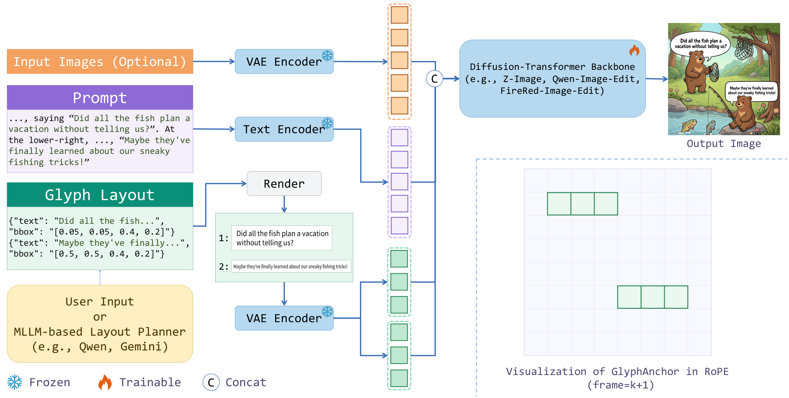
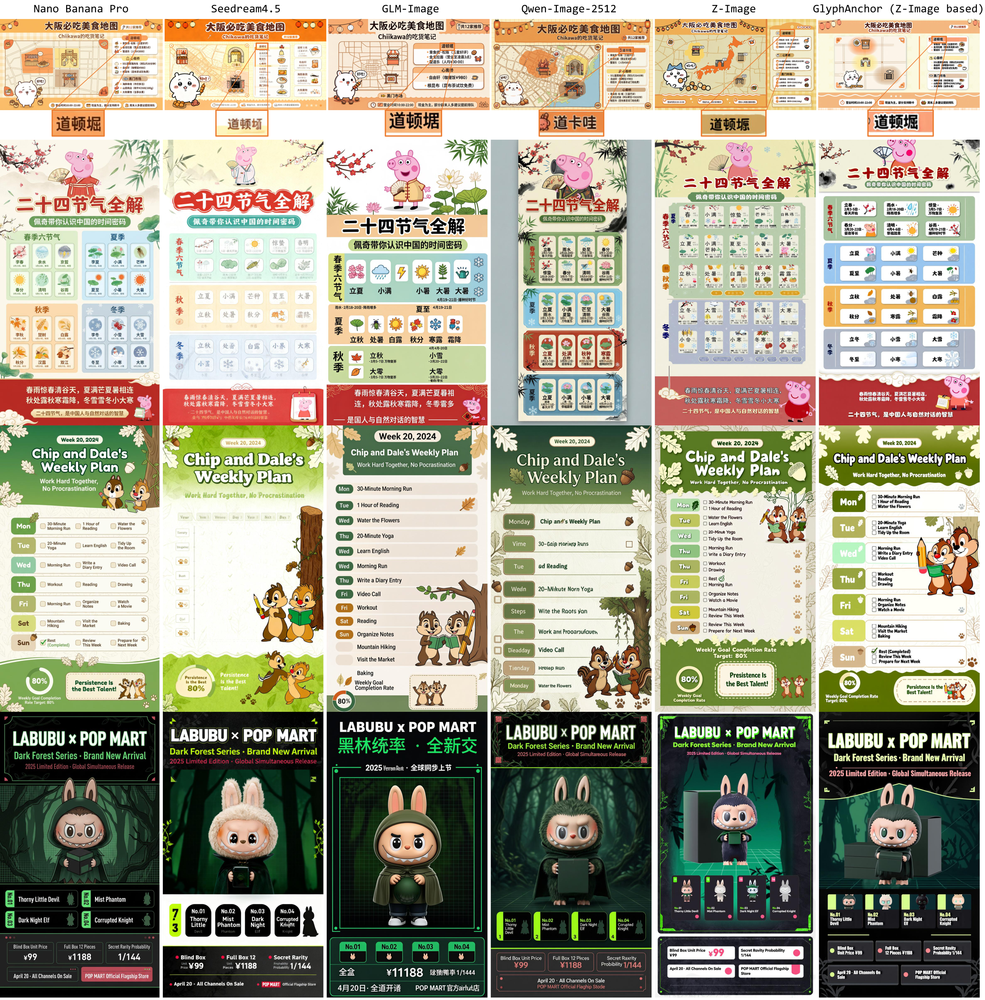

Anchor the glyphs
Render each target text as a compact glyph patch. Encode the patches into visual tokens and anchor their RoPE positions to the target layout, alongside the prompt and optional source images.
NeurIPS 2026
1 Fudan University2 Xiaohongshu Inc.3 Shanghai Innovation Institute
* Corresponding author
Code and model weights are available.
Accurate characters. Grounded layouts. Rich visual styles.
Lightweight glyph priors enhance text rendering across long passages, dense layouts, and rare characters.
The paper
Rendering accurate text remains difficult for image generation and editing models, especially when the target contains long, complex, and densely arranged text or rare characters. Existing approaches either improve native text rendering through stronger backbones and data-centric training without explicit glyph priors, or incorporate glyph priors through specialized designs that remain insufficiently accurate and robust under challenging scenarios. We introduce GlyphAnchor, a novel text-rendering enhancement method for both text-to-image and image-editing diffusion transformer models. GlyphAnchor enhances the backbone with lightweight glyph patch conditions whose positions are anchored to the target image through the model's native positional encoding. We train this capability with staged supervised finetuning and further refine it with text-aware post-training to improve robustness. We also introduce InfoTextBench, a benchmark for evaluating text-rich visual text rendering in both generation and editing settings. Experiments across multiple backbones and benchmarks, including long, complex, and densely arranged text and rare character scenarios, show that GlyphAnchor consistently improves text fidelity while preserving overall image quality.
How it works
Character shapes and target positions, brought together in the backbone's native positional encoding.

Render each target text as a compact glyph patch. Encode the patches into visual tokens and anchor their RoPE positions to the target layout, alongside the prompt and optional source images.
Staged supervised fine-tuning gradually shifts from ground-truth image crops to rendered glyph patches. Glyph augmentation improves robustness to variations in appearance and layout.
DiffusionNFT post-training combines text-layout consistency, style, and visual fusion rewards to improve text correctness and integration with the surrounding image.
Visual comparisons

Text-to-image generation
Download weights ↗Image editing
Download weights ↗Image editing
Download weights ↗Evaluation
| Model | NED ↑ | Word Recall ↑ | Word Precision ↑ | Word F1 ↑ | Phrase Hit Rate ↑ | Overall Visual Quality ↑ |
|---|---|---|---|---|---|---|
| FireRed-Image-Edit-1.1 | 0.210 | 0.443 | 0.463 | 0.433 | 0.154 | 4.608 |
| FireRed-Image-Edit-1.1 + GlyphAnchor | 0.651 | 0.950 | 0.864 | 0.898 | 0.713 | 6.480 |
| Qwen-Image-Edit-2511 | 0.237 | 0.466 | 0.543 | 0.479 | 0.167 | 4.603 |
| Qwen-Image-Edit-2511 + GlyphAnchor | 0.632 | 0.957 | 0.817 | 0.871 | 0.737 | 6.704 |
| Z-Image | 0.566 | 0.949 | 0.821 | 0.872 | 0.807 | 7.092 |
| Z-Image + GlyphAnchor | 0.710 | 0.978 | 0.929 | 0.950 | 0.885 | 8.822 |
| Model | EN ↑ | ZH ↑ | Avg. ↑ |
|---|---|---|---|
| FireRed-Image-Edit-1.1 | 0.895 | 0.898 | 0.897 |
| FireRed-Image-Edit-1.1 + GlyphAnchor | 0.990 | 0.980 | 0.985 |
| Qwen-Image-Edit-2511 | 0.900 | 0.924 | 0.912 |
| Qwen-Image-Edit-2511 + GlyphAnchor | 0.983 | 0.984 | 0.984 |
| Z-Image | 0.935 | 0.936 | 0.936 |
| Z-Image + GlyphAnchor | 0.975 | 0.987 | 0.981 |
| Model | EN ↑ | ZH ↑ | Avg. ↑ |
|---|---|---|---|
| FireRed-Image-Edit-1.1 | 0.813 | 0.937 | 0.875 |
| FireRed-Image-Edit-1.1 + GlyphAnchor | 0.961 | 0.969 | 0.965 |
| Qwen-Image-Edit-2511 | 0.893 | 0.963 | 0.928 |
| Qwen-Image-Edit-2511 + GlyphAnchor | 0.960 | 0.975 | 0.967 |
| Z-Image | 0.987 | 0.988 | 0.988 |
| Z-Image + GlyphAnchor | 0.988 | 0.994 | 0.991 |
| Model | NED ↑ | CLIP ↑ | WAC ↑ |
|---|---|---|---|
| FireRed-Image-Edit-1.1 | 0.865 | 0.785 | 0.747 |
| FireRed-Image-Edit-1.1 + GlyphAnchor | 0.968 | 0.782 | 0.917 |
| Qwen-Image-Edit-2511 | 0.850 | 0.774 | 0.717 |
| Qwen-Image-Edit-2511 + GlyphAnchor | 0.968 | 0.801 | 0.922 |
| Z-Image | 0.937 | 0.797 | 0.867 |
| Z-Image + GlyphAnchor | 0.970 | 0.823 | 0.924 |
| Model | Level-1 ↑ | Level-2 ↑ | Level-3 ↑ | Total ↑ |
|---|---|---|---|---|
| FireRed-Image-Edit-1.1 | 0.926 | 0.411 | 0.067 | 0.565 |
| FireRed-Image-Edit-1.1 + GlyphAnchor | 0.992 | 0.783 | 0.416 | 0.801 |
| Qwen-Image-Edit-2511 | 0.816 | 0.360 | 0.051 | 0.496 |
| Qwen-Image-Edit-2511 + GlyphAnchor | 0.987 | 0.795 | 0.438 | 0.807 |
| Z-Image | 0.852 | 0.278 | 0.025 | 0.476 |
| Z-Image + GlyphAnchor | 0.939 | 0.377 | 0.102 | 0.565 |
Reference
@inproceedings{xiang2026glyphanchor,
title={GlyphAnchor: Enhancing Visual Text Rendering via Position-Anchored Glyph Priors},
author={Qiang Xiang and Shuang Sun and Binglei Li and Yibo Chen and Xu Tang and Yao Hu and Junping Zhang},
booktitle={The Fortieth Annual Conference on Neural Information Processing Systems},
year={2026},
url={https://openreview.net/forum?id=c3aMyawBN4}
}